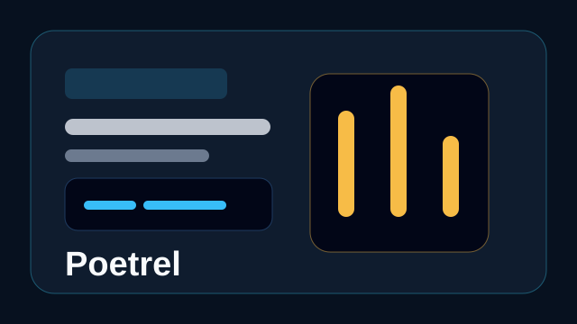
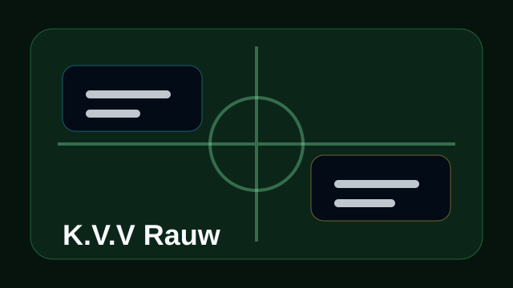
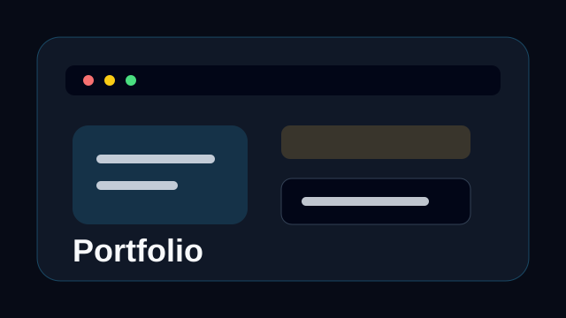

Projectoverzicht
Projecten en realisaties
Een overzicht van projecten waarin ik software, support, structuur en praktische oplossingen samenbreng. Elk project toont een ander stuk van mijn groei als APP/AI-student.
Kies Je Pad
Zes projecten, zes stappen vooruit
.webp)
Aurubis IT-ondersteuning
IT-support en troubleshooting binnen een productieomgeving waar duidelijke opvolging belangrijk is.
Open Project
MissionZebra
Een teamproject rond planning, schermtijd en een praktische mobiele flow voor gezinnen.
Open Project
Poetrel
Softwareproject met focus op logica, data en een duidelijke opbouw van idee naar werkend prototype.
Open Project
K.V.V Rauw
Project voor een clubcontext, met aandacht voor heldere informatie, structuur en gebruiksgemak.
Open Project
Portfolio Website
Mijn eigen portfolio waarin ik projecten, groei en ambitie duidelijker samenbreng.
Open Project
Helpse
Een applicatieconcept rond hulpvragen en overzicht: sneller vinden wat nodig is, zonder onnodige stappen.
Open Project